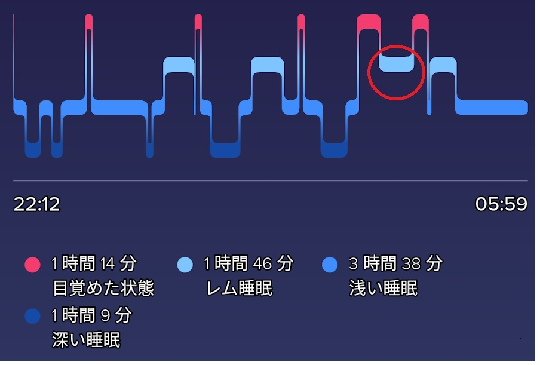
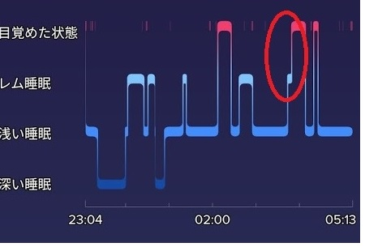

2021年6月18日 (金)
肥田式強健術とは腰腹の中心に力を加えることにより、仙骨神経叢より脊髄神経を通じて、大脳前頭葉の知能中枢に伝わり歓喜光明の境地を得るという修行法である。これはチベット密教における滴（クンダリニー）の上昇と同じであるが、肥田式強健術は観念によるものではなく腰腹の筋肉を緊張させることにより物理的な力を中心に加えることに特徴がある。それで、いかにして腰腹の筋肉を集中させるかであるが、立ち姿勢の時は肥田先生が述べているように足の親指を緊張させると、それに連動して腰腹緊張もやりやすい。あと椅子に座った座姿勢では腰の部分だけ背もたれにつけないで少し背を反ると腰腹緊張がやりやすくなる。次に寝姿勢の場合は、仰向けでひざを立てながら、たまに腰を浮かせてヒップリフトをするようにしている。
深夜２度寝時に椅子にビーチチェアに座り背を反って腰腹の筋肉を緊張持続させる。20分ぐらいして、中心力が頭頂に上がるのを感じられたので、寝姿勢になってひざを立てて腰腹の筋肉を緊張持続させる。間もなくして体が起き上がり離脱する。しばらく部屋の中にいてから、終了する。
2021年6月20日 (日)
全身全霊で腰腹圧迫緊張
夜２度寝時に立ち姿勢と寝姿勢で全身全霊で腰腹圧迫緊張を１時間程する。その後寝姿勢でも継続して腰腹圧迫緊張をする。まもなくして部屋の中で離脱する。部屋の中でなんとか離脱した後に意識が飛んで、次は丘のような場所で移動しているに気づく。幽体を安定させるために手を握って胸の前に両手を組む。次に公園のようなところに行く。顔は識別できないけど人が何人か歩いている。また意識が飛んで、次に、再度部屋の中で離脱する。また幽体を安定させるために手を握って胸の前に両手を組む。部屋のドアを開けて、ドアの外に出る。そこで幽体が不安定になってきたので、部屋に戻って、ドアのサムターンの鍵を閉める。まもなくして終了する。

2021年6月22日 (火)
YUKIを想う
夜２度寝時に全身全霊で腰腹緊張集中を１時間ほどする。寝姿勢になってしばらくすると、昔に住んでいた北九州の部屋のようなところで離脱をしているのを確認する。離脱後にyuki（何十年にわたって、まれに夢に出てくる存在。ナワリズムでいう非有機的生命体か）を想ってると幽体がはっきりして安定して、周りの景色もカラーになる。女の会話している声が聞こえたので、うるさく感じ部屋の窓から外に飛び降りる。１戸建ての小屋が数件建っている場所に降りる。周りはうす暗い。そこから右の方向へ滑走しながら移動すると、神社がある。神社をそのまま通り過ぎると、１階に窓がある部屋が３つあるマンションを見つける。一番左の部屋の窓を通りぬけて進入すると、子供と両親と思われる３人が仰向けになって寝ている。うす暗いので顔までは判別できない。それから、その部屋から出る。そして離脱は終了して目が覚める。
カルロス・カスタネダの著作の中で、幽体を滑走して移動するとエネルギーを消耗すると書かれている。確かに今までの体験で幽体で部屋の外に出て滑走すると、エネルギー切れになって、長時間持たずに幽体離脱が終了するパターンがほとんどである。今回、YUKIを想う事によって幽体がはっきりして安定したが、滑走して移動せずに、そういう方法で意識の集合点を固定させた方が長時間離脱につながるのではないかと思ったので、次回からはそういうふうに意図して離脱したいと思う。

2021年6月26日 (土)
呼気
肥田式強健術では、腰腹緊張とともに加速度的に息を吐きだすのが要点になっている。私も腰腹緊張する時は息を全て吐き出すことに重点を置いて、吸気はそれほどは気にしない。なぜなら息を全て吐きだせば、自然に多くの息を吸い込むからである。それゆえ肥田式強健術はチベット密教でルン（呼吸）を中央脈脈管に吸い込む行法に通じる。
深夜２度寝時、呼気に気を使いながら腰腹緊張の修行をする。寝姿勢になって、しばらくして部屋の中で足が浮いているのに気づいて離脱を確認する。窓を開けるが外に出れないので何度も窓を開ける。そして外に出るが幽体が下に落下するのではないかと不安になり部屋に戻る。隣の部屋に移動して、その部屋の窓から出ようとしたが下を見て高いので止める。玄関のドアから階段で下に降りようと玄関を探すが玄関の位置にドアが見つからない。そこで終了して目が覚める。